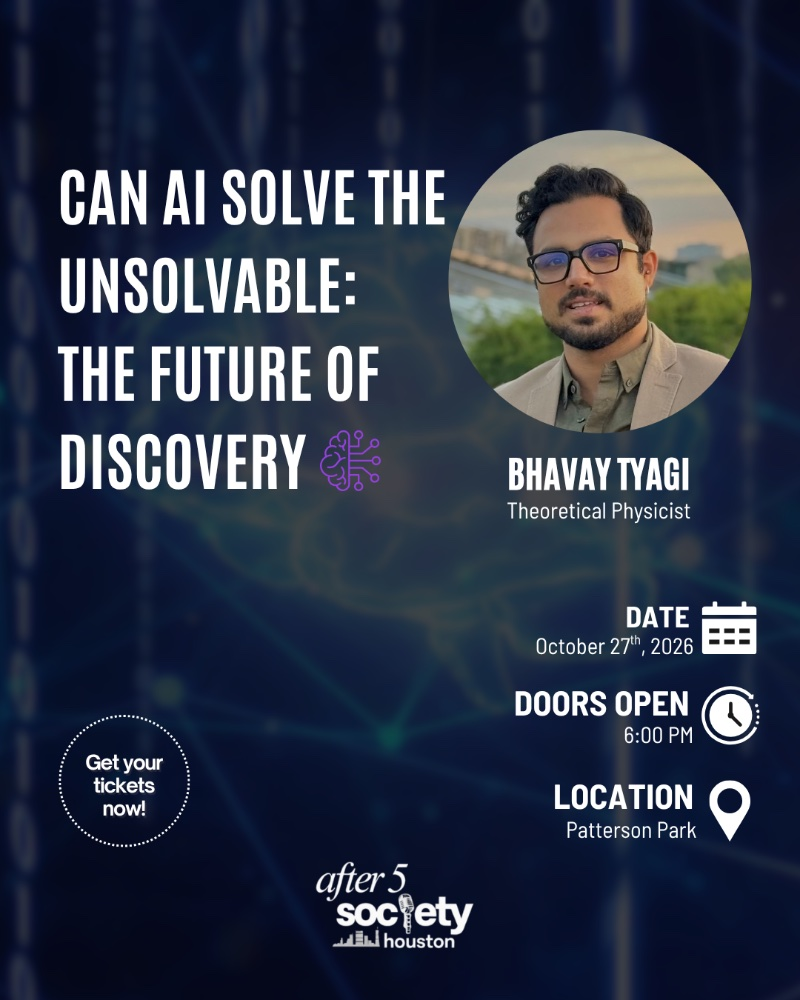

Can AI Solve the Unsolvable: The Future of Discovery

On October 27th, 2026, I'm giving a public lecture on some of the recent advances in AI, hosted by After 5 Society Houston.
As AI improves and weaves itself further into all our lives, staying informed matters more than ever as the world around us changes. This technology is unlike any other: it is powerful, it is novel, and it is inevitable. It carries real benefits alongside real risks, and it stands to prove pivotal for human civilization.
Join me, and let's talk about AI and the future of discovery.
Date: October 27th, 2026
Doors open: 6:00 PM
Location: Patterson Park
Get TicketsUse promo code bhavaypromo15 for 15% off.